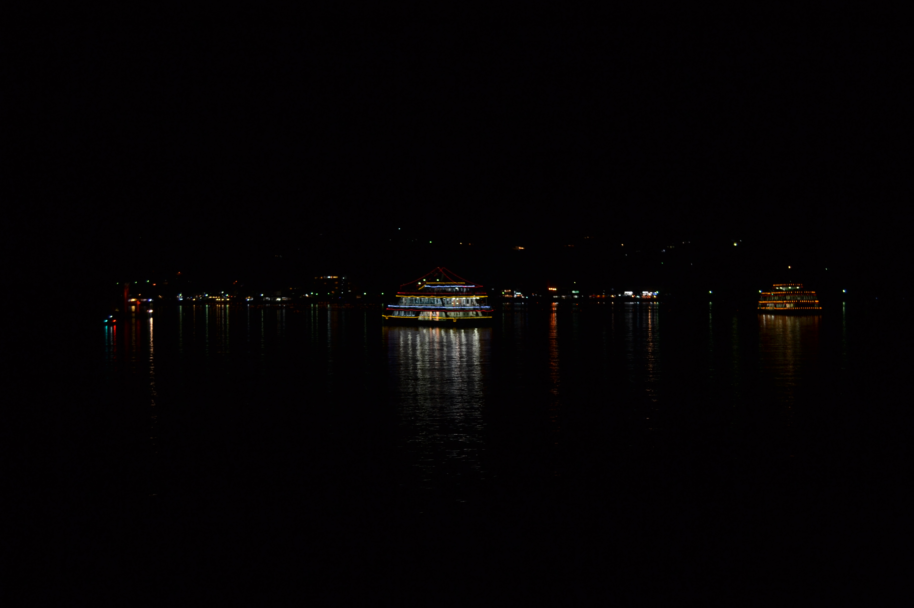
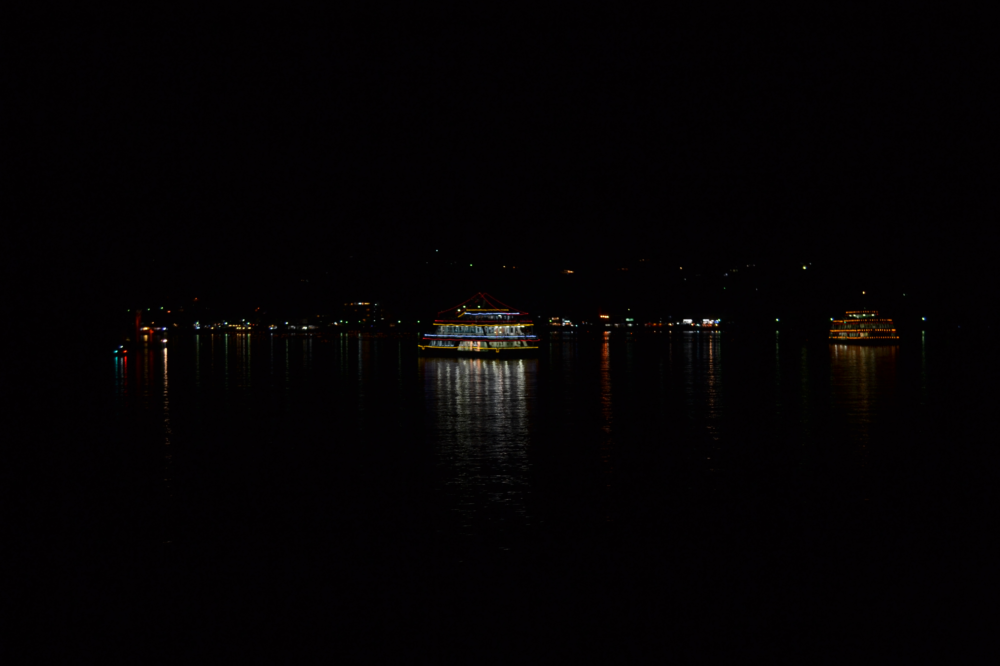
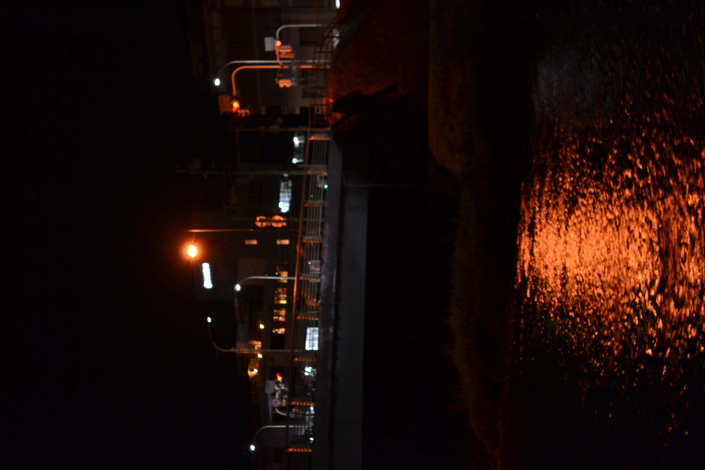
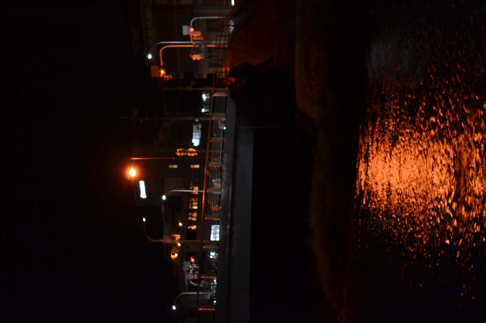

japan 2017
In 2017 I was extremely fortunate to have the opportunity to visit Japan. Throughout my travels I captured, amongst other things, several shots of fleeting moments.
The Japanese metropolises in particular are rich with perpetual motion; Each photograph is a snapshot in time of seemingly mundane moments that might otherwise be lost forever.
The real and material conditions under which these scenes exist might appear unremarkable, but it's precisely those circumstances which make these shots unique.
Thank you Japan for being so friendly and hospitable throughout my stay.


 

 
